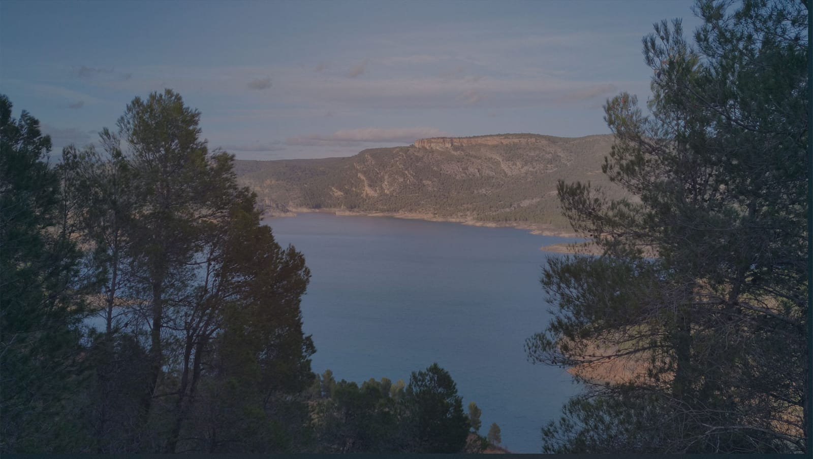

Segunda edición
El libro del Manco de La Pesquera
Más de 30 entrevistas y 170 sumarios judiciales en 18 años de investigación. Un héroe olvidado de la provincia de Cuenca que merece un lugar en nuestra memoria colectiva.
Dónde conseguirlo →
Basiliso Serrano Valero, guerrillero antifranquista. Fusilado en Paterna en 1955 por defender la libertad y la democracia. Su historia, su ruta y su memoria.
Expediente · Índice
De pastor en El Molinillo a «Fortuna», jefe guerrillero del AGLA. Vida, lucha y memoria de Basiliso Serrano Valero, con sus propios poemas.
30 de enero de 1947, Quebradas del Morrón. El combate más duro de la AGLA, relatado por el historiador Salvador F. Cava.
Sendero PR-CU-58: 11 kilómetros por los parajes donde vivió y luchó el maquis, con mapa interactivo de los puntos históricos.
«El Manco de La Pesquera: la historia de un guerrillero antifranquista». 289 páginas, 30 entrevistas y 18 años de investigación.
Una vida en nueve fechas
Destacados
Segunda edición
Más de 30 entrevistas y 170 sumarios judiciales en 18 años de investigación. Un héroe olvidado de la provincia de Cuenca que merece un lugar en nuestra memoria colectiva.
Dónde conseguirlo →Gobierno de España · 2023
El 29 de septiembre de 2023, el Ministerio de la Presidencia firmó la declaración de reparación y reconocimiento personal que anula la condena dictada en 1955.
La declaración →Castilla-La Mancha TV
El programa Variotinto dedicó un reportaje a Basiliso Serrano, su historia y su ruta por las Hoces del Cabriel.
Revista digital de estudios del maquis
Diez números de investigación sobre la guerrilla, la represión y la memoria de las montañas del Cabriel: artículos, documentos y fotografías inéditas, en acceso libre.